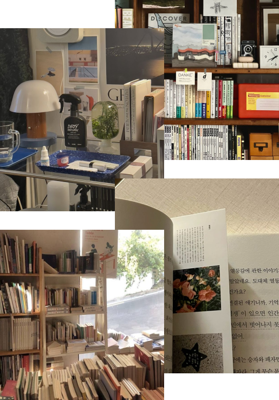

오늘 필요한 나의 감성은 무엇인가요?
책은 단순히 물리적 취향만을 반영하는 아이템과는 달리 사용자의 정신적 ∙
감정적 취향을 담아내며,
가치관 형성이나 고민 해결 등으로 삶에 깊은 영감을 줄 수 있는 특별한 매체입니다.
그 중에서도 독립 서적은 대형 출판물보다 작가의 개성과 독창성이 더 강하게 드러나기 때문에
밀도 높은 감정적 교류와 소통이 가능하고, 더 개인적이고 특별한 큐레이션이 가능하게 만들어 줍니다.
가치관 형성이나 고민 해결 등으로 삶에 깊은 영감을 줄 수 있는 특별한 매체입니다.
그 중에서도 독립 서적은 대형 출판물보다 작가의 개성과 독창성이 더 강하게 드러나기 때문에
밀도 높은 감정적 교류와 소통이 가능하고, 더 개인적이고 특별한 큐레이션이 가능하게 만들어 줍니다.

다양한 가치의 발견을 통해 세계를 확장시켜 일상의 깊이를 더해줄
뜻밖의 발견
Serendipity
탐색 과정에서 예상치 못한
독특한 콘텐츠와 순간들을 만나며 감동을 얻고,
자신만의 새로운 취향을 찾아갈 수 있도록
독특한 콘텐츠와 순간들을 만나며 감동을 얻고,
자신만의 새로운 취향을 찾아갈 수 있도록
연결
Connection
개인의 독특한 경험과 가치를 반영하는
독립출판물을 통해 나와 타인의 이야기를 연결해
새로운 시각과 감동을 얻도록
독립출판물을 통해 나와 타인의 이야기를 연결해
새로운 시각과 감동을 얻도록
몰입
Immersion
특유의 개성을 가진 독립출판 및 공간을 만나는
과정을 통해 자신만의 몰입감을 느끼며
일상에 새로운 의미를 부여할 수 있게
과정을 통해 자신만의 몰입감을 느끼며
일상에 새로운 의미를 부여할 수 있게
고유의 공간을 경험하고, 다양한 라이프스타일을 발견하며
성장하고 있는 독립출판 시장에 함께 하는
Bonda
를 보다
동그라미 위에 마우스를 올려보세요!
B
책을 뜻하는 단어 Book
책을 중심으로 연결되는 우리의 이야기
책을 중심으로 연결되는 우리의 이야기
Onda
스페인어로 물결을 뜻하는 단어
서점과 독서 후에 이어지는 감정과 흐름
서점과 독서 후에 이어지는 감정과 흐름
뜻밖의 순간이 만들어줄, 당신의 이야기